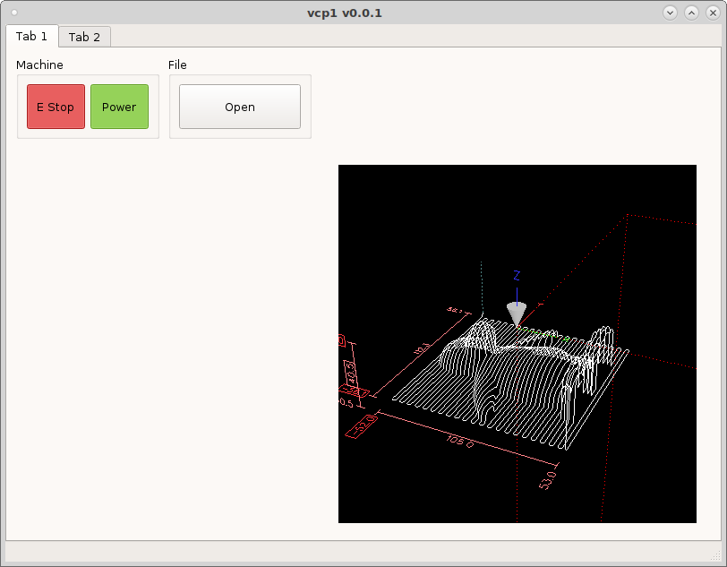
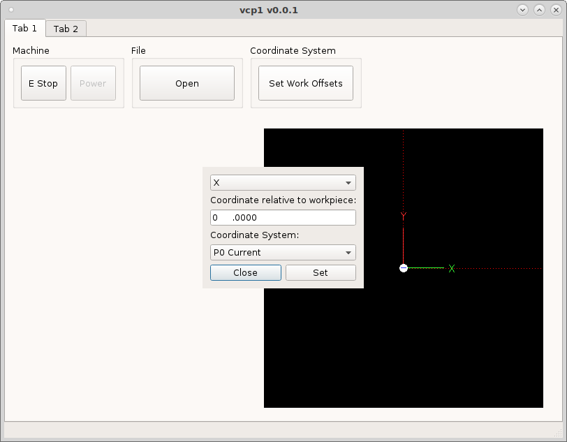

Dialogs
Dialogs are small popup windows that perform different functions. They are a good way to get input from a user, or display information that might take up too much room on the main screen.
Standard Dialogs
To launch a dialog add a DialogButton to the vcp and in the dialogName add the name of the dialog.
Lets add an Open dialog to the vcp by adding a DialogButton to a group box and
in the dialogName put open_file. Change the minimum width and height to 50
and save and run.
{kind=link}
If we add a GcodeBackplot widget to the vcp we can see the file that is loaded.
{kind=link}
Now we need to add the touch off dialog by adding a DialogButton and setting the dialogName to ``set_work_offsets`.
{kind=link}
Available Standard Dialogs:
set_work_offsets
open_file
Custom Dialogs
Custom dialogs can be defined by either a .ui file or a .py file.
Dialogs from UI file:
To make a custom dialog, create a new dialog in QtDesigner. Make sure to use one of the dialog templates when creating the new form.
Now in the .yml config file add your dialog to the dialogs section.
dialogs:
my_dialog:
provider: qtpyvcp.widgets.dialogs.base_dialog:BaseDialog
kwargs:
ui_file: {{ file.dir }}/my_dialog.ui
title: My Dialog Title # optional, set the dialog title
modal: false # optional, whether the dialog is modal
popup: false # optional, whether the dialog is a popup
frameless: false # optional, whether the dialog is frameless
stay_on_top: true # optional, whether the dialog stays on top
Dialogs from Python:
If your dialog is complicated enough to require python code, you can inherit the BaseDialog and create your own dialog provider class.
Create a new file named my_dialog.py with the content:
from qtpyvcp.widgets.dialogs.base_dialog import BaseDialog
class MyDialog(BaseDialog):
def __init__(self, *args, **kwargs):
super(MyDialog, self).__init__(*args, **kwargs)
# implement dialog functionality here
And in your .yml config file specify the custom provider:
my_dialog:
provider: my_vcp.my_dialog:MyDialog
This custom provider will accept all the same kwarg options as the BaseDialog, but will allow you to use python code to add more advanced functionality than you could with .ui file dialog.